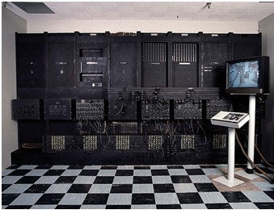

Програмування
Першим запрограмованим пристроєм прийнято вважати жакардовий ткацький верстат, побудований в 1804 році Жозефом Марі Жаккар. Він здійснив революцію в ткацькій промисловості, надавши можливість програмувати візерунки на тканинах за допомогою перфокарт.
Першу в історії людства програму для обчислювальної машини написала в 1843 році графиня Ада Августа Лавлейс, дочка великого англійського поета Джорджа Байрона. Ця програма вирішувала рівняння Бернуллі, що виражає закон збереження енергії рухомої рідини. На честь першої програмістки названа універсальна мова програмування «Ада».
В 1946 року в Америці був запущений перший у світі реально програмований електронний комп'ютер ENIAC. ENIAC важив 30 тонн і складався з 18 тисяч електронних ламп. ENIAC у порівнянні з сучасним ПК був просто черепахою - його швидкодія було всього 5000 операцій в секунду. Комп'ютер пропрацював дев'ять років до 1955 року.До нього в світі існували і більш ранні моделі комп'ютерів, але всі вони були експериментальними варіантами не отримали практичного використання.
День програміста святкується в 256 день року (13 вересня, у високосний рік – 12 вересня). Вибір числа 256 не випадковий – воно виходить від виведення двійки у восьму ступінь. Саме таку кількість чисел можна виразити за допомогою одного восьмирозрядного байта.
Перший в континентальній Європі комп’ютер було створено в Україні в 1951 году. Перша ЕОМ називалась Малою електронною обчислюванною машиною. Вона нараховувала 6000 електронних ламп та ледь вмістилась в лівому крилі гуртожитку в селещі Феофанія, що в 10 км від Києва. Машина була побудована в лабораторії обчислюваної техніки Інституту електротехніки АН УРСР під керівництвом академіка С.О.Лебедєва.
Пророцтво майбутнього винаходу iPad зробив академік В.М.Глушков в своїй книзі «Основи без паперової інформатики»(вийшла друком в 1982) : «Вже недалеко той день, коли зникне звичайна книга, журнал та газета. Замість цього кожна людина буде носити з собою «електронний» блокнот, що буде представляти собою комбінацію плоского монітору з мініатюрним радіопередавачем. Набираючи на клавіатурі цього «блокноту» потрібний код, можна буде (знаходячись в будь-якому місці на нашій планеті) визвати з гігантських комп’ютерних баз даних, що пов’язані в мережі, будь-які тексти, зображення (в тому числі і динамічні), які і замінять не тільки сучасні книги, журнали та газети, але і сучасні телевізори.»
«Hello, world!» – програма, результатом роботи якої є виведення на екран або інший пристрій фрази «Hello, world!» (дослівний переклад з англійської – «Привіт, світ!»). Зазвичай це перший приклад програми в підручниках з програмування, і для багатьох студентів така програма є першим досвідом при вивченні нової мови.
Кафедра прикладного програмування Державного університету телекомунікацій запрошує абітурієнтів до вступу до нашого університету, саме у нас Ви напишите свою першу програму!
Цікаві програми
StrokesPlus - оригінальна програма для управління комп'ютером за допомогою рухів миші. Для того щоб використовувати даний софт вам потрібно спочатку задати список різних символів (малюнків, ліній, букв і т.п.) і закріпити за кожним з них яку-небудь дію (запуск іншої програми, створення документа, включення медіаплеєра і так далі). Після того як програма запам'ятає символи вам достатньо буде затиснути праву кнопку миші і намалювати на екрані будь-якої з них, після чого додаток автоматично виконає закріплену команду. Наскільки ця програма може прискорити вашу роботу невідомо, однак те, що вона зробить її веселіше - незаперечний факт.
Google Earth - швидка віртуальна подорож в будь-яку точку світу. Фактично дана програма є оффлайн варіантом карт від Google. Її особливістю є те, що ви без будь-яких труднощів можете відвідувати найрізноманітніші пам'ятки нашої планети, розглядати вулиці і будинки в 3D і навіть за бажання подивитися на поверхню Місяця. Також у ній є фотографії віддалених куточків всесвіту, зроблені телескопом NASA.
pMetro - це проста в освоєнні, але дуже корисна утиліта, яка стане в нагоді тим, хто постійно пересувається в метро. Програма містить картки «підземки» багатьох міст і дозволяє обчислити оптимальний маршрут пересування між станціями, з урахуванням пересадок і очікування. Також ви самостійно можете завантажити в базу даних додаткові карти для будь-якого з міст світу.

Цікаві пристрої
Компанія Xiaomi випустила новий універсальний автомобільний зарядний пристрій, який підтримує бездротову зарядку потужністю 10 Вт.
Новий бездротовий зарядний пристрій підтримує різні пристрої, тобто ви можете заряджати не тільки флагмани Xiaomi Mi 10 і Mi 9, але і Samsung Galaxy S10/S20 і навіть новий iPhone SE 2020.
Універсальний бездротовий зарядний пристрій 10 Вт від Xiaomi починає працювати при наближенні смартфона на відстань близько 4 мм, тобто захисний чохол не стане великою проблемою, хоча більш ефективною зарядка буде для смартфонів без чохла. Гаджет оснащений електричними індукційними затискними кронштейнами з обох сторін для утримання телефону на місці.
Пристрій, що захистить ваше помешкання від злодіїв. Мій будинок – моя фортеця. Розумні речі вже заполонили технологічний ринок, в тому числі й ті, що забезпечують вам безпеку. У 2018 році було презентовано віртуального асистента Кевіна, який розроблений компанією Mitipi. Герой названий на честь головного герою зі знаменитого фільму. Кевін достатньо оригінально виконує свої обов’язки: окрім постійної трансляції відео господарю з його дому, у випадку загрози злому він демонструє злодіям уявну наявність людей в помешканні. Помічник вмикає світло та поводить себе як людина: щось говорить, відтворює різні звуки так, ніби вдома хтось слухає радіо або дивиться телевізор.йне і точне керування інструментами.
Зібрати розкидані речі після дітлахів в будинку відтепер допоможе робот, презентація якого відбулася у жовтні японською компанією Preferred Networks. Окрім розуміння голосових команд, робот здатен обережно зібрати маленькі та великі речі та шукати забуті чи втрачені речі. З часом роботизований механізм все частіше вивчатиме домашній лад. З таким роботом процес прибирання стане повністю автоматизованим. Робот відстежуватиме, які саме речі лежать не в тому місці, вертаючи олівці на підставку на столі та ретельно розкладати брудний посуд в посудомийку. Компанія ще не повідомила про точні строки виходу продукту на ринок.
Китайський стартап Sleepace презентував спеціальну розробку для дому DreamLife. Система дозволяє відстежувати якість сну та забезпечує комфортне пробудження як це реалізовано в окремих пристроях компанії (датчики сну RestOn та SleepDot, аромалампа NoxAroma та світло-будильник NoxMusic).
За допомогою всіх компонентів продукт керує мікрокліматом спальної кімнати: світло, вологість, температура. Будь-які забуті електропристрої, чи то телевізор або праска, система вимикає, а зранку до вашого пробудження готує свіжу каву та тости. У продаж така система поступить не скоро, десь після 2020 року.
Пристрій було презентовано у вересні стартапом з Нью-Йорку. Mirror розробляє програму тренувань, підлаштовуючись під ваші інтереси та індивідуальні характеристики – вага, тиск, пульс, температура тощо. Відео вправ зображується на поверхні так, щоб ви могли бачити як тренера, так і себе, а також свій прогрес. Можна займатися будь-яким виглядом спорту різних ступенів важкості – хоч танцями, хоч боксом (біля 50 видів спорту).